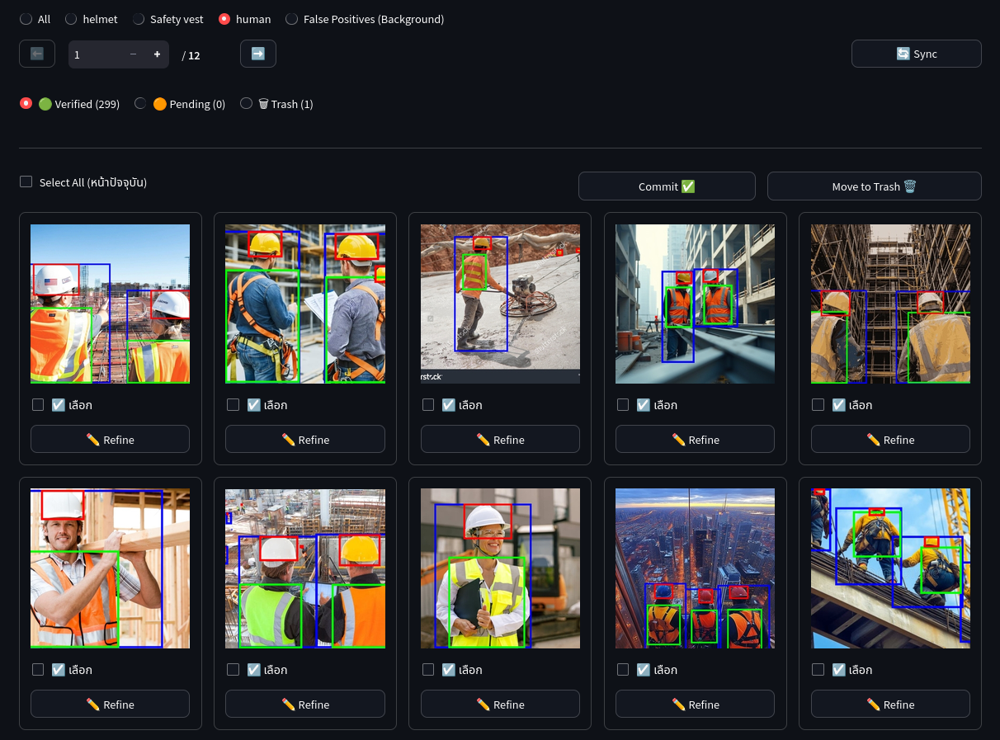
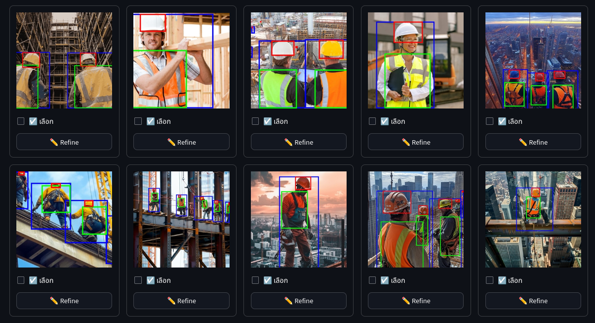

การวิเคราะห์ค่า Confidence ของโมเดล AI ด้วยวิธีสถิติแบบ Paired ผ่าน R Studio
โปรเจกต์นี้นำเสนอการเปรียบเทียบโมเดล AI ทั้ง 2 ตัว โดยทำการ train ด้วย Learning Rate ที่แตกต่างกัน ได้แก่ Linear Lr และ Cosine Lr เพื่อประเมินประสิทธิภาพการเรียนรู้ภายใต้ชุดข้อมูลเดียวกัน
เปรียบเทียบค่า Confidence เชิงสถิติรายคู่ (Paired comparison) ระหว่างการปรับ Learning Rate สองรูปแบบ เพื่อค้นหาแนวทางที่ให้ประสิทธิภาพสูงสุด
การเตรียม Data Set ใช้รูปภาพสำหรับการตรวจจับ 3 คลาส ได้แก่ Helmet (หมวกนิรภัย), Safety Vest (เสื้อนิรภัย) และ Human (คน) จำนวนรวมทั้งสิ้น 1100 รูป
ข้อมูลภาพทั้งหมดถูกจัดการผ่านแอปพลิเคชัน AI Training Studio ที่พัฒนาขึ้นเองในโปรเจกต์ Check_security_equipment โดยใช้ระบบ Smart Gallery ที่มี AI ช่วยค้นหาและตีกรอบวัตถุให้อัตโนมัติ ก่อนนำมาตรวจสอบความถูกต้อง
ในการเตรียมชุดข้อมูลเพื่อฝึกโมเดล ระบบได้ทำการแบ่งสัดส่วนข้อมูลอัตโนมัติเป็น Train 80%, Validation 10% และ Test 10%
พร้อมทั้งทำการเพิ่มความแม่นยำด้วยวิธี Data Augmentation (พลิกภาพซ้าย-ขวา และปรับแสงสว่าง) เพื่อให้โมเดลเรียนรู้ได้ดีขึ้นและมีประสิทธิภาพสูงสุดเมื่อนำไปใช้งานจริง


ตัวอย่างหน้าจอระบบตรวจสอบภาพคลาสใน Smart Gallery
เน้นฝึก Detector เพื่อระบุตำแหน่งวัตถุในภาพ (Object Detection) ภายใต้ตัวแปรควบคุมมาตรฐานเพื่อให้ผลลัพธ์มีความแม่นยำและเป็นธรรม
รวบรวมภาพตัวอย่างจาก Google Search จำนวน 912 ภาพ นำมาทดสอบกับโมเดลทั้ง 2 ตัวเพื่อสกัดค่า Confidence Score แบบจับคู่
ภาพเดียวกันจะถูกทำนายโดยโมเดล Linear และ Cosine จากนั้นนำค่า Confidence Score ที่ได้มาจับคู่กันในแถวเดียว (Row-by-Row) รวมทั้งหมด 912 คู่ เพื่อใช้วิเคราะห์ความแตกต่างทางสถิติต่อไป
| Image_Name | Linear_Confidence | Cosine_Confidence |
|---|---|---|
| helmet\-.webp | 0.6764643200 | 0.6589509800 |
| helmet\-1-mp4.webp | 0.0449091100 | 0.6120632900 |
| helmet\2F0012F947..._blue.png | 0.7741223600 | 0.4210037900 |
การออกแบบการวิเคราะห์แบบจับคู่ (Paired Design) บนหน่วยสังเกตเดียวกันจำนวน 912 คู่ข้อมูล
ผลการตรวจสอบการแจกแจงของข้อมูลและการทดสอบสมมติฐานด้วย Wilcoxon Test
ผลลัพธ์จากการรันคำสั่งใน RStudio พร้อม continuity correction (N = 912 คู่)
ข้อสรุป ปฏิเสธสมมติฐานหลัก (H0) ยืนยันว่า Linear และ Cosine ให้ค่า Confidence แตกต่างกันอย่างมีนัยสำคัญ
หลังจากทราบว่าทั้งสองโมเดลมีความแตกต่างกันทางสถิติ ขั้นตอนนี้จึงเป็นการตรวจสอบค่ามัธยฐานและสถิติสรุปเพื่อดูทิศทางของข้อมูล
เป้าหมายของขั้นตอนนี้: ตรวจสอบค่ามัธยฐานและสรุปสภาพกระจายตัวของข้อมูล เพื่อดูว่าโมเดลไหนให้ค่าความมั่นใจสูงกว่ากัน
| วิธี (Model) | Min | Q1 | Median (มัธยฐาน) | Mean (ค่าเฉลี่ย) | Q3 | Max |
|---|---|---|---|---|---|---|
| Linear LR | 0.0000 | 0.7731 | 0.9016 | 0.8111 | 0.9447 | 0.9907 |
| Cosine LR | 0.0000 | 0.6954 | 0.8439 | 0.7587 | 0.9162 | 0.9863 |
วิเคราะห์ทิศทาง: โมเดลแบบ Linear มีค่ามัธยฐานสูงกว่า Cosine ประมาณ +0.0577 (~5.77 จุดเปอร์เซ็นต์) และมีค่าสูงกว่าใน 5 จาก 6 ค่าสถิติสรุปข้างต้น ซึ่งชี้ชัดว่า Linear ให้ความมั่นใจสูงกว่า
รายชื่อสมาชิกในทีมผู้จัดทำและการเข้าถึงโครงงาน